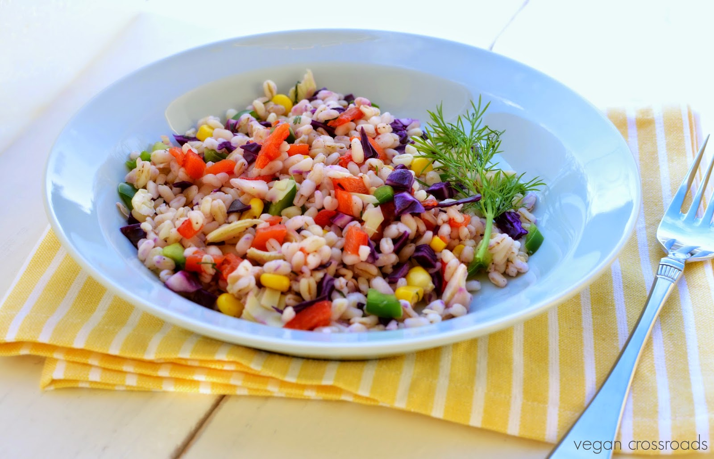

Este plato es un verdadero paraíso visual, que ofrece una combinación de millones de sabores a su paladar. Con muchas texturas diferentes, crujientes, suaves y esponjosos.
$678,42

Deliciosa combinación de tallarines frescos preparadas al dente y combinadas con un mix de coloridas verduras que combinadas realzan el sabor de la pasta.
$420,20
Suave crema de frutos rojos que inundara de frescura su paladar. Preparado con frutas de estación
$576